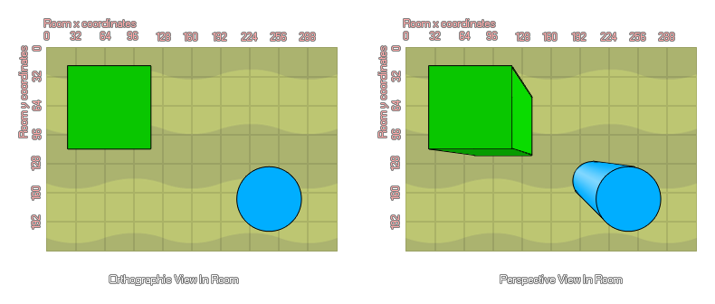

Diese Funktion erstellt eine orthographische Projektionsmatrix basierend auf den unten aufgeführten Parametern (dies ist die Standardprojektionsmethode, die verwendet wird, wenn Sie einen Raum in GameMaker Studio 2 erstellen, ohne etwas zu ändern). Manchmal müssen Sie von einer perspektivischen Projektion zu einer orthographischen Projektion wechseln, für die diese Funktion bestimmt ist. Es wird typischerweise verwendet, um ein Overlay zu zeichnen, um beispielsweise die Punktezahl oder andere Aspekte anzuzeigen, da dies eine "flache" Ansicht der gezeichneten Elemente (dh: keine Perspektive) in einem 3D-Spiel ergibt. Sehen Sie sich das Bild unten an, um einen Eindruck vom Unterschied zwischen orthographischen und perspektivischen Ansichten zu bekommen.
HINWEIS: Sie müssen möglicherweise auch die Entfernung verdeckter Flächen vorübergehend deaktivieren, wenn die Informationen unabhängig vom aktuellen Tiefenwert gezeichnet werden sollen.
matrix_build_projection_ortho(width, height, znear, zfar);
Streit Beschreibung w Die Breite der Projektion. h Die Höhe der Projektion. znear Die nahe Clipping-Ebene. zfar Die ferne Clipping-Ebene.
Matrix index
viewmat = matrix_build_lookat(640, 240, -10, 640,
240, 0, 0, 1, 0);
projmat = matrix_build_projection_ortho(640, 480, 1.0,
32000.0);
camera_set_view_mat(view_camera[0], viewmat);
camera_set_proj_mat(view_camera[0], projmat);
Der obige Code erstellt eine neue Look-at-Matrix und orthographische Matrix, speichert ihre IDs in lokalen Variablen und verwendet sie dann zum Einstellen der Ansichts- und Projektionsmatrizen für die Kamera, die Port [0] zugeordnet ist.